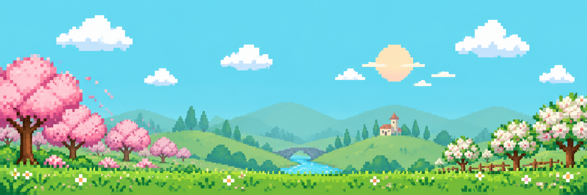
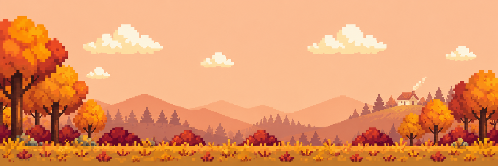
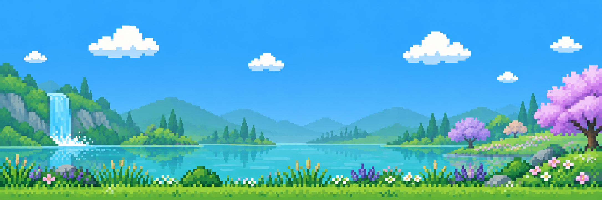
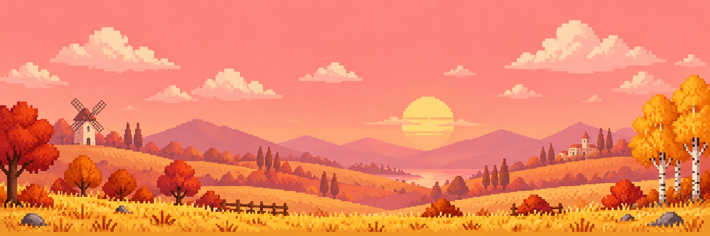

VERSÃO JOGÁVEL 0.10.0 · ARTE DA FAMÍLIA
Aventura das Letras
Os quatro personagens já caminham, correm, pulam e comemoram no jardim. Samara veste o moletom marrom e o jeans claro da referência Nude Project.
João Miguel
30 quadros · cinco folhas transparentes
Luna
30 quadros · cinco folhas transparentes
Lucas o Engenheiro
30 quadros · cinco folhas transparentes
Samara
30 quadros · cinco folhas transparentes
Nova abertura em pixel art
Personagens animados, botões grandes e adaptação a telas largas e verticais. Menu e verificações
Aventura contínua e oito superpoderes
Escolha dois poderes e siga de um cenário ao outro sem telas de conclusão. Poderes, duração e controles
100 palavras dissílabas
20 fases novas, com ajuda para ler em duas sílabas. Ver lista completa
Palavras entre primavera e outono
48 fases, incluindo 30 palavras monossílabas. Quatro panoramas gerados com ChatGPT e 48 composições de cenário. Palavras e cenários · Prompts das imagens
Os quatro panoramas originais




Entrega anterior: alfabeto e sílabas
42 fases · 26 letras · 169 combinações silábicas. Ver conteúdo completo
Como jogar · Entrega e evidências · Produção e prompts · Galeria anterior de bases